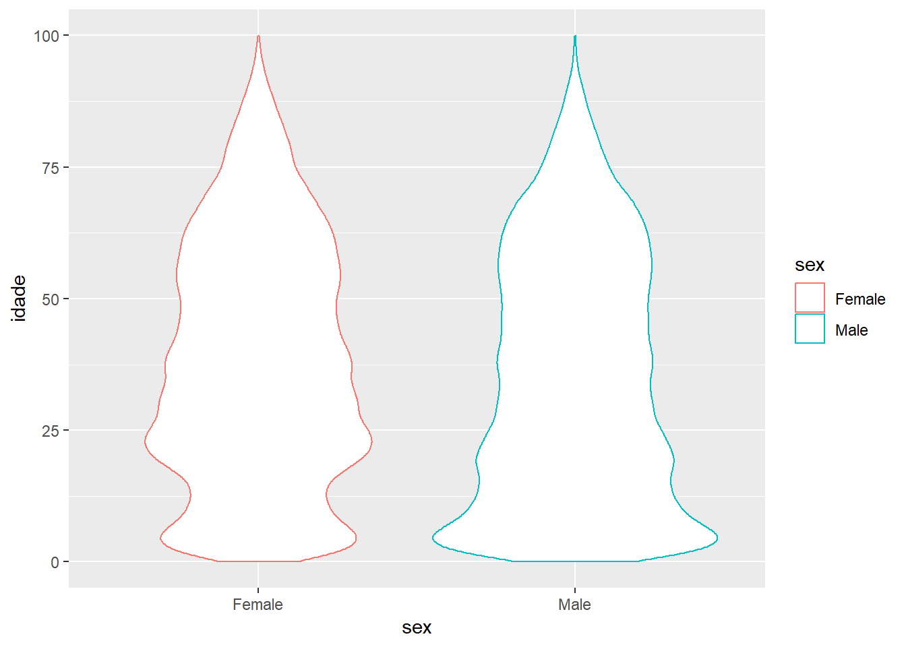

Prevalences
This chapter explores the prevalences of chronic health conditions among 695.078 patients seen in the Primary Care (PC) clinics from 2013 to 2018. The diseases were selected from the Charlson (Charlson et al. 1987) and Elixhauser (Elixhauser et al. 1998) Comorbidities indexes since they are the two main indexes studied in the literature related to in-patient deaths.
Each index has its own set of conditions and weights. The sets of conditions were taken from the orginial articles (1987; 1998) where they were first published and from the Comorbidity R package article (Gasparini 2018), where the author uses the same set of ICD-10 codes to build the indexes.
Each chronic condition will be presented here with its prevalence in the population studied and stratified by age and sex. The DT library will be used to present the data and at the end of this chapter information about Multimorbidity is presented.
Population description
In this study only patients that have had at least one medical consultation during the period studied were counted.
| Female (N=343433) | Male (N=238487) | Total (N=581920) | |
|---|---|---|---|
| Age | |||
| < 18 | 74814 (21.8%) | 74422 (31.2%) | 149236 (25.6%) |
| 20s | 66638 (19.4%) | 38829 (16.3%) | 105467 (18.1%) |
| 30s | 49262 (14.3%) | 27792 (11.7%) | 77054 (13.2%) |
| 40s | 42101 (12.3%) | 26603 (11.2%) | 68704 (11.8%) |
| 50s | 41857 (12.2%) | 27347 (11.5%) | 69204 (11.9%) |
| 60s | 35205 (10.3%) | 24161 (10.1%) | 59366 (10.2%) |
| 70s | 20313 (5.9%) | 12702 (5.3%) | 33015 (5.7%) |
| 80s | 10782 (3.1%) | 5593 (2.3%) | 16375 (2.8%) |
| 90s | 2461 (0.7%) | 1038 (0.4%) | 3499 (0.6%) |

Prevalence in the general population
# has <- cbind(hasm, hasf[2:3])
kable(prevalencias, caption = "Table 2: ") %>%
kable_styling(bootstrap_options = c("striped", "hover")) %>%
add_header_above(c(" ", "Female (N = 343.433)" = 3, "Male (N = 238.487)" = 3))| Morbidities | Number of cases | Prevalence | SD | Number of cases | Prevalence | SD |
|---|---|---|---|---|---|---|
| Hypertension | 76767 | 22.35 | 0.42 | 41347 | 17.34 | 0.38 |
| Complications related to Hypertension | 1904 | 0.55 | 0.07 | 1401 | 0.59 | 0.08 |
| Diabetes without chronic complication | 24652 | 7.18 | 0.26 | 15404 | 6.46 | 0.25 |
| Diabetes with chronic complication | 1451 | 0.42 | 0.06 | 1236 | 0.52 | 0.07 |
| Dyslipidemia | 4479 | 1.3 | 0.11 | 2550 | 1.07 | 0.1 |
| Obesity | 6096 | 1.78 | 0.13 | 2197 | 0.92 | 0.1 |
| Tobbaco use | 7966 | 2.32 | 0.15 | 5066 | 2.12 | 0.14 |
| Myocardial infarction | 521 | 0.15 | 0.04 | 721 | 0.3 | 0.05 |
| Congestive heart failure | 1804 | 0.53 | 0.07 | 1526 | 0.64 | 0.08 |
| Renal failure | 789 | 0.23 | 0.05 | 887 | 0.37 | 0.06 |
| Cardiac arrhythmias | 1382 | 0.4 | 0.06 | 1192 | 0.5 | 0.07 |
| Peripheral vascular disorders | 336 | 0.1 | 0.03 | 375 | 0.16 | 0.04 |
| Coagulopathy | 234 | 0.07 | 0.03 | 138 | 0.06 | 0.02 |
| Valvular disease | 384 | 0.11 | 0.03 | 200 | 0.08 | 0.03 |
| Pulmonary circulation disorders | 84 | 0.02 | 0.02 | 57 | 0.02 | 0.02 |
| Blood loss anaemia | 2185 | 0.64 | 0.08 | 651 | 0.27 | 0.05 |
| Iron deficiency anemia | 1905 | 0.55 | 0.07 | 641 | 0.27 | 0.05 |
| Alcohol Abuse | 306 | 0.09 | 0.03 | 1226 | 0.51 | 0.07 |
| Illicit drug abuse | 492 | 0.14 | 0.04 | 836 | 0.35 | 0.06 |
| Psychosis | 1519 | 0.44 | 0.07 | 1444 | 0.61 | 0.08 |
| Depression | 5728 | 1.67 | 0.13 | 1235 | 0.52 | 0.07 |
| Hypothiroidism | 4345 | 1.27 | 0.11 | 502 | 0.21 | 0.05 |
| Fluid and electrolyte disorders | 110 | 0.03 | 0.02 | 92 | 0.04 | 0.02 |
| Rheumatoid arthritis/collagen vascular diseases (Elixhauser Index) | 1470 | 0.43 | 0.07 | 283 | 0.12 | 0.03 |
| Rheumatic disease (Charlson Index) | 1280 | 0.37 | 0.06 | 192 | 0.08 | 0.03 |
| Other neurological disorders | 2162 | 0.63 | 0.08 | 2492 | 1.04 | 0.1 |
| Cerebrovascular disease | 1899 | 0.55 | 0.07 | 1833 | 0.77 | 0.09 |
| Dementia | 1277 | 0.37 | 0.06 | 646 | 0.27 | 0.05 |
| Paralysis | 219 | 0.06 | 0.03 | 295 | 0.12 | 0.04 |
| Chronic pulmonary disease | 4988 | 1.45 | 0.12 | 3290 | 1.38 | 0.12 |
| Peptic ulcer disease, excluding bleeding | 157 | 0.05 | 0.02 | 150 | 0.06 | 0.03 |
| Mild liver disease | 680 | 0.2 | 0.04 | 594 | 0.25 | 0.05 |
| Severe liver disease | 28 | 0.01 | 0.01 | 72 | 0.03 | 0.02 |
| Liver cirrhosis | 705 | 0.21 | 0.05 | 641 | 0.27 | 0.05 |
| Weight loss | 534 | 0.16 | 0.04 | 403 | 0.17 | 0.04 |
| Solid tumour without metastasis | 2107 | 0.61 | 0.08 | 1423 | 0.6 | 0.08 |
| Metastatic cancer | 53 | 0.02 | 0.01 | 45 | 0.02 | 0.01 |
| Lymphoma | 113 | 0.03 | 0.02 | 103 | 0.04 | 0.02 |
| Leukemia | 56 | 0.02 | 0.01 | 35 | 0.01 | 0.01 |
| AIDS/HIV | 1094 | 0.32 | 0.06 | 1568 | 0.66 | 0.08 |
Prevalence in the adult population
Here we considered only patient older than 18 years-old. 149.236 patients were withdrawn from the sample.
kable(prevalencias_adultos, caption = "Table 3:") %>%
kable_styling(bootstrap_options = c("striped", "hover")) %>%
add_header_above(c(" ", "Female (N = 268.619)" = 3, "Male (N = 164.065)" = 3))| Morbidities | Number of cases | Prevalence | SD | Number of cases | Prevalence | SD |
|---|---|---|---|---|---|---|
| Hypertension | 76694 | 28.55 | 0.45 | 41278 | 25.16 | 0.43 |
| Complications related to Hypertension | 1895 | 0.71 | 0.08 | 1392 | 0.85 | 0.09 |
| Diabetes without chronic complication | 24528 | 9.13 | 0.29 | 15310 | 9.33 | 0.29 |
| Diabetes with chronic complication | 1445 | 0.54 | 0.07 | 1234 | 0.75 | 0.09 |
| Dyslipidemia | 4414 | 1.64 | 0.13 | 2471 | 1.51 | 0.12 |
| Obesity | 5660 | 2.11 | 0.14 | 1718 | 1.05 | 0.1 |
| Tobbaco use | 7963 | 2.96 | 0.17 | 5066 | 3.09 | 0.17 |
| Myocardial infarction | 521 | 0.19 | 0.04 | 719 | 0.44 | 0.07 |
| Congestive heart failure | 1791 | 0.67 | 0.08 | 1510 | 0.92 | 0.1 |
| Renal failure | 784 | 0.29 | 0.05 | 880 | 0.54 | 0.07 |
| Cardiac arrhythmias | 1330 | 0.5 | 0.07 | 1106 | 0.67 | 0.08 |
| Peripheral vascular disorders | 335 | 0.12 | 0.04 | 374 | 0.23 | 0.05 |
| Coagulopathy | 215 | 0.08 | 0.03 | 123 | 0.07 | 0.03 |
| Valvular disease | 363 | 0.14 | 0.04 | 171 | 0.1 | 0.03 |
| Pulmonary circulation disorders | 77 | 0.03 | 0.02 | 48 | 0.03 | 0.02 |
| Blood loss anaemia | 1907 | 0.71 | 0.08 | 345 | 0.21 | 0.05 |
| Iron deficiency anemia | 1644 | 0.61 | 0.08 | 346 | 0.21 | 0.05 |
| Alcohol Abuse | 304 | 0.11 | 0.03 | 1225 | 0.75 | 0.09 |
| Illicit drug abuse | 472 | 0.18 | 0.04 | 820 | 0.5 | 0.07 |
| Psychosis | 1502 | 0.56 | 0.07 | 1410 | 0.86 | 0.09 |
| Depression | 5652 | 2.1 | 0.14 | 1202 | 0.73 | 0.09 |
| Hypothiroidism | 4264 | 1.59 | 0.12 | 452 | 0.28 | 0.05 |
| Fluid and electrolyte disorders | 97 | 0.04 | 0.02 | 74 | 0.05 | 0.02 |
| Rheumatoid arthritis/collagen vascular diseases (Elixhauser Index) | 1435 | 0.53 | 0.07 | 261 | 0.16 | 0.04 |
| Rheumatic disease (Charlson Index) | 1266 | 0.47 | 0.07 | 183 | 0.11 | 0.03 |
| Other neurological disorders | 1759 | 0.65 | 0.08 | 1906 | 1.16 | 0.11 |
| Cerebrovascular disease | 1888 | 0.7 | 0.08 | 1827 | 1.11 | 0.1 |
| Dementia | 1276 | 0.48 | 0.07 | 645 | 0.39 | 0.06 |
| Paralysis | 197 | 0.07 | 0.03 | 265 | 0.16 | 0.04 |
| Chronic pulmonary disease | 4044 | 1.51 | 0.12 | 2020 | 1.23 | 0.11 |
| Peptic ulcer disease, excluding bleeding | 152 | 0.06 | 0.02 | 149 | 0.09 | 0.03 |
| Mild liver disease | 676 | 0.25 | 0.05 | 588 | 0.36 | 0.06 |
| Severe liver disease | 28 | 0.01 | 0.01 | 71 | 0.04 | 0.02 |
| Liver cirrhosis | 701 | 0.26 | 0.05 | 634 | 0.39 | 0.06 |
| Weight loss | 420 | 0.16 | 0.04 | 309 | 0.19 | 0.04 |
| Solid tumour without metastasis | 2086 | 0.78 | 0.09 | 1409 | 0.86 | 0.09 |
| Metastatic cancer | 53 | 0.02 | 0.01 | 45 | 0.03 | 0.02 |
| Lymphoma | 111 | 0.04 | 0.02 | 92 | 0.06 | 0.02 |
| Leukemia | 50 | 0.02 | 0.01 | 29 | 0.02 | 0.01 |
| AIDS/HIV | 1070 | 0.4 | 0.06 | 1552 | 0.95 | 0.1 |
Diabetes Mellitus
Diabetes without chronic complication
The ICD-10 codes are E10.0, E10.1, E10.6, E10.8, E10.9, E11.0, E11.1, E11.6, E11.8, E11.9, E12.0, E12.1, E12.6, E12.8, E12.9, E13.0, E13.1, E13.6, E13.8, E13.9, E14.0, E14.1, E14.6, E14.8, E14.9
| Age | Total | Affected | Prevalence | Total | Affected | Prevalence |
|---|---|---|---|---|---|---|
| < 18 | 74422 | 94 | 0.13 (0.04) | 74814 | 124 | 0.17 ( 0.04 ) |
| 20s | 38829 | 193 | 0.5 (0.07) | 66638 | 320 | 0.48 ( 0.07 ) |
| 30s | 27792 | 595 | 2.14 (0.14) | 49262 | 871 | 1.77 ( 0.13 ) |
| 40s | 26603 | 1851 | 6.96 (0.25) | 42101 | 2448 | 5.81 ( 0.23 ) |
| 50s | 27347 | 3717 | 13.59 (0.34) | 41857 | 5548 | 13.25 ( 0.34 ) |
| 60s | 24161 | 4917 | 20.35 (0.4) | 35205 | 7527 | 21.38 ( 0.41 ) |
| 70s | 12702 | 2904 | 22.86 (0.42) | 20313 | 5190 | 25.55 ( 0.44 ) |
| 80s | 5593 | 1007 | 18 (0.38) | 10782 | 2232 | 20.7 ( 0.41 ) |
| 90s | 1038 | 126 | 12.14 (0.33) | 2461 | 392 | 15.93 ( 0.37 ) |
| 1 The ICD-10 codes are E10.0, E10.1, E10.6, E10.8, E10.9, E11.0, E11.1, E11.6, E11.8, E11.9, E12.0, E12.1, E12.6, E12.8, E12.9, E13.0, E13.1, E13.6, E13.8, E13.9, E14.0, E14.1, E14.6, E14.8, E14.9 | ||||||
| 2 Diabetes without chronic complication is present at both Charlson and Elixhauser Comorbidity Indexes |
Diabetes with chronic complications
The ICD-10 codes are E10.2 - E10.5, E10.7, E11.2 - E11.5, E11.7, E12.2 - E12.5, E12.7, E13.2 - E13.5, E13.7, E14.2 - E14.5, E14.7
| Age | Total | Affected | Prevalence | Total | Affected | Prevalence |
|---|---|---|---|---|---|---|
| < 18 | 74422 | 2 | 0 (0.01) | 74814 | 6 | 0.01 ( 0.01 ) |
| 20s | 38829 | 4 | 0.01 (0.01) | 66638 | 11 | 0.02 ( 0.01 ) |
| 30s | 27792 | 29 | 0.1 (0.03) | 49262 | 32 | 0.06 ( 0.03 ) |
| 40s | 26603 | 111 | 0.42 (0.06) | 42101 | 109 | 0.26 ( 0.05 ) |
| 50s | 27347 | 285 | 1.04 (0.1) | 41857 | 284 | 0.68 ( 0.08 ) |
| 60s | 24161 | 419 | 1.73 (0.13) | 35205 | 498 | 1.41 ( 0.12 ) |
| 70s | 12702 | 264 | 2.08 (0.14) | 20313 | 317 | 1.56 ( 0.12 ) |
| 80s | 5593 | 102 | 1.82 (0.13) | 10782 | 173 | 1.6 ( 0.13 ) |
| 90s | 1038 | 20 | 1.93 (0.14) | 2461 | 21 | 0.85 ( 0.09 ) |
| 1 The ICD-10 codes are E10.2 - E10.5, E10.7, E11.2 - E11.5, E11.7, E12.2 - E12.5, E12.7, E13.2 - E13.5, E13.7, E14.2 - E14.5, E14.7 | ||||||
| 2 Diabetes with chronic complication is present at both Charlson and Elixhauser Comorbidity Indexes |
Dyslipidemia
The ICD-10 codes are E78.
| Age | Total | Affected | Prevalence | Total | Affected | Prevalence |
|---|---|---|---|---|---|---|
| < 18 | 74422 | 79 | 0.11 (0.03) | 74814 | 65 | 0.09 ( 0.03 ) |
| 20s | 38829 | 56 | 0.14 (0.04) | 66638 | 72 | 0.11 ( 0.03 ) |
| 30s | 27792 | 193 | 0.69 (0.08) | 49262 | 216 | 0.44 ( 0.07 ) |
| 40s | 26603 | 497 | 1.87 (0.14) | 42101 | 597 | 1.42 ( 0.12 ) |
| 50s | 27347 | 695 | 2.54 (0.16) | 41857 | 1231 | 2.94 ( 0.17 ) |
| 60s | 24161 | 691 | 2.86 (0.17) | 35205 | 1371 | 3.89 ( 0.19 ) |
| 70s | 12702 | 256 | 2.02 (0.14) | 20313 | 657 | 3.23 ( 0.18 ) |
| 80s | 5593 | 76 | 1.36 (0.12) | 10782 | 239 | 2.22 ( 0.15 ) |
| 90s | 1038 | 7 | 0.67 (0.08) | 2461 | 31 | 1.26 ( 0.11 ) |
1 The ICD-10 codes are E78.
|
||||||
| 2 Dyslipidemia is present at both Charlson and Elixhauser Comorbidity Indexes |
Obesity
The ICD-10 codes are E66.
| Age | Total | Affected | Prevalence | Total | Affected | Prevalence |
|---|---|---|---|---|---|---|
| < 18 | 74422 | 479 | 0.64 (0.08) | 74814 | 436 | 0.58 ( 0.08 ) |
| 20s | 38829 | 264 | 0.68 (0.08) | 66638 | 812 | 1.22 ( 0.11 ) |
| 30s | 27792 | 331 | 1.19 (0.11) | 49262 | 1214 | 2.46 ( 0.16 ) |
| 40s | 26603 | 428 | 1.61 (0.13) | 42101 | 1247 | 2.96 ( 0.17 ) |
| 50s | 27347 | 341 | 1.25 (0.11) | 41857 | 1176 | 2.81 ( 0.17 ) |
| 60s | 24161 | 251 | 1.04 (0.1) | 35205 | 828 | 2.35 ( 0.15 ) |
| 70s | 12702 | 72 | 0.57 (0.08) | 20313 | 291 | 1.43 ( 0.12 ) |
| 80s | 5593 | 30 | 0.54 (0.07) | 10782 | 81 | 0.75 ( 0.09 ) |
| 90s | 1038 | 1 | 0.1 (0.03) | 2461 | 11 | 0.45 ( 0.07 ) |
1 The ICD-10 codes are E66.
|
||||||
| 2 Obesity is present only at the Elixhauser Comorbidity Indexes |
Tobbaco use
The ICD-10 codes are B20.x - B22.x, B24.x. Present in both Indexes.
| Age | Total | Affected | Prevalence | Total | Affected | Prevalence |
|---|---|---|---|---|---|---|
| < 18 | 74422 | 0 | 0 (0) | 74814 | 3 | 0 ( 0.01 ) |
| 20s | 38829 | 67 | 0.17 (0.04) | 66638 | 112 | 0.17 ( 0.04 ) |
| 30s | 27792 | 261 | 0.94 (0.1) | 49262 | 475 | 0.96 ( 0.1 ) |
| 40s | 26603 | 615 | 2.31 (0.15) | 42101 | 1194 | 2.84 ( 0.17 ) |
| 50s | 27347 | 1324 | 4.84 (0.21) | 41857 | 2639 | 6.3 ( 0.24 ) |
| 60s | 24161 | 1827 | 7.56 (0.26) | 35205 | 2472 | 7.02 ( 0.26 ) |
| 70s | 12702 | 781 | 6.15 (0.24) | 20313 | 811 | 3.99 ( 0.2 ) |
| 80s | 5593 | 172 | 3.08 (0.17) | 10782 | 226 | 2.1 ( 0.14 ) |
| 90s | 1038 | 19 | 1.83 (0.13) | 2461 | 34 | 1.38 ( 0.12 ) |
1 The ICD-10 codes are B20.x - B22.x, B24.x
|
||||||
| 2 Tobbaco use is not present in any Comorbidity Indexes |
Myocardial infarction
The ICD-10 codes are I21.x, I22.x, I25.2. Only present in the Charlson Index.
| Age | Total | Affected | Prevalence | Total | Affected | Prevalence |
|---|---|---|---|---|---|---|
| < 18 | 74422 | 2 | 0 (0.01) | 74814 | 0 | 0 ( 0 ) |
| 20s | 38829 | 4 | 0.01 (0.01) | 66638 | 1 | 0 ( 0 ) |
| 30s | 27792 | 22 | 0.08 (0.03) | 49262 | 7 | 0.01 ( 0.01 ) |
| 40s | 26603 | 60 | 0.23 (0.05) | 42101 | 51 | 0.12 ( 0.03 ) |
| 50s | 27347 | 194 | 0.71 (0.08) | 41857 | 124 | 0.3 ( 0.05 ) |
| 60s | 24161 | 237 | 0.98 (0.1) | 35205 | 162 | 0.46 ( 0.07 ) |
| 70s | 12702 | 138 | 1.09 (0.1) | 20313 | 113 | 0.56 ( 0.07 ) |
| 80s | 5593 | 59 | 1.05 (0.1) | 10782 | 52 | 0.48 ( 0.07 ) |
| 90s | 1038 | 5 | 0.48 (0.07) | 2461 | 11 | 0.45 ( 0.07 ) |
1 The ICD-10 codes are I21.x, I22.x, I25.2
|
||||||
| 2 Myocardial infarction is only present in the Charlson Index |
Congestive heart failure
The ICD-10 codes are I09.9, I11.0, I13.0, I13.2, I25.5, I42.0, I42.5 - I42.9, I43.x, I50.x, P29.0. Present in both Indexes.
| Age | Total | Affected | Prevalence | Total | Affected | Prevalence |
|---|---|---|---|---|---|---|
| < 18 | 74422 | 16 | 0.02 (0.01) | 74814 | 13 | 0.02 ( 0.01 ) |
| 20s | 38829 | 23 | 0.06 (0.02) | 66638 | 26 | 0.04 ( 0.02 ) |
| 30s | 27792 | 46 | 0.17 (0.04) | 49262 | 61 | 0.12 ( 0.04 ) |
| 40s | 26603 | 120 | 0.45 (0.07) | 42101 | 143 | 0.34 ( 0.06 ) |
| 50s | 27347 | 317 | 1.16 (0.11) | 41857 | 320 | 0.76 ( 0.09 ) |
| 60s | 24161 | 468 | 1.94 (0.14) | 35205 | 433 | 1.23 ( 0.11 ) |
| 70s | 12702 | 333 | 2.62 (0.16) | 20313 | 413 | 2.03 ( 0.14 ) |
| 80s | 5593 | 179 | 3.2 (0.18) | 10782 | 330 | 3.06 ( 0.17 ) |
| 90s | 1038 | 24 | 2.31 (0.15) | 2461 | 65 | 2.64 ( 0.16 ) |
1 The ICD-10 codes are I09.9, I11.0, I13.0, I13.2, I25.5, I42.0, I42.5 - I42.9, I43.x, I50.x, P29.0
|
||||||
| 2 Congestive heart failure is present at both Charlson and Elixhauser Comorbidity Indexes |
Renal failure
The ICD-10 codes are G04.1, G11.4, G80.1, G80.2, G81.x, G82.x, G83.0 - G83.4, G83.9. Present in both Indexes.
| Age | Total | Affected | Prevalence | Total | Affected | Prevalence |
|---|---|---|---|---|---|---|
| < 18 | 74422 | 7 | 0.01 (0.01) | 74814 | 5 | 0.01 ( 0.01 ) |
| 20s | 38829 | 18 | 0.05 (0.02) | 66638 | 14 | 0.02 ( 0.01 ) |
| 30s | 27792 | 29 | 0.1 (0.03) | 49262 | 34 | 0.07 ( 0.03 ) |
| 40s | 26603 | 82 | 0.31 (0.06) | 42101 | 63 | 0.15 ( 0.04 ) |
| 50s | 27347 | 130 | 0.48 (0.07) | 41857 | 130 | 0.31 ( 0.06 ) |
| 60s | 24161 | 246 | 1.02 (0.1) | 35205 | 183 | 0.52 ( 0.07 ) |
| 70s | 12702 | 219 | 1.72 (0.13) | 20313 | 188 | 0.93 ( 0.1 ) |
| 80s | 5593 | 129 | 2.31 (0.15) | 10782 | 143 | 1.33 ( 0.11 ) |
| 90s | 1038 | 27 | 2.6 (0.16) | 2461 | 29 | 1.18 ( 0.11 ) |
1 The ICD-10 codes are G04.1, G11.4, G80.1, G80.2, G81.x, G82.x, G83.0 - G83.4, G83.9
|
||||||
| 2 Renal failure is present at both Charlson and Elixhauser Comorbidity Indexes |
Cardiac arrhythmias
The ICD-10 codes are I44.1 - I44.3, I45.6, I45.9, I47.x - I49.x, R00.0, R00.1, R00.8, T82.1, Z45.0, Z95.0
| Age | Total | Affected | Prevalence | Total | Affected | Prevalence |
|---|---|---|---|---|---|---|
| < 18 | 74422 | 7 | 0.01 (0.01) | 74814 | 5 | 0.01 ( 0.01 ) |
| 20s | 38829 | 18 | 0.05 (0.02) | 66638 | 14 | 0.02 ( 0.01 ) |
| 30s | 27792 | 29 | 0.1 (0.03) | 49262 | 34 | 0.07 ( 0.03 ) |
| 40s | 26603 | 82 | 0.31 (0.06) | 42101 | 63 | 0.15 ( 0.04 ) |
| 50s | 27347 | 130 | 0.48 (0.07) | 41857 | 130 | 0.31 ( 0.06 ) |
| 60s | 24161 | 246 | 1.02 (0.1) | 35205 | 183 | 0.52 ( 0.07 ) |
| 70s | 12702 | 219 | 1.72 (0.13) | 20313 | 188 | 0.93 ( 0.1 ) |
| 80s | 5593 | 129 | 2.31 (0.15) | 10782 | 143 | 1.33 ( 0.11 ) |
| 90s | 1038 | 27 | 2.6 (0.16) | 2461 | 29 | 1.18 ( 0.11 ) |
1 The ICD-10 codes are I44.1 - I44.3, I45.6, I45.9, I47.x - I49.x, R00.0, R00.1, R00.8, T82.1, Z45.0, Z95.0
|
||||||
| 2 Cardiac arrhythmias is present at only at the Elixhauser Comorbidity Indexes |
Peripheral vascular disorders
The ICD-10 codes are I70.x, I71.x, I73.1, I73.8, I73.9, I77.1, I79.0, I79.2, K55.1, K55.8, K55.9, Z95.8, Z95.9. Present in both Indexes.
| Age | Total | Affected | Prevalence | Total | Affected | Prevalence |
|---|---|---|---|---|---|---|
| < 18 | 74422 | 1 | 0 (0) | 74814 | 1 | 0 ( 0 ) |
| 20s | 38829 | 3 | 0.01 (0.01) | 66638 | 2 | 0 ( 0.01 ) |
| 30s | 27792 | 7 | 0.03 (0.02) | 49262 | 12 | 0.02 ( 0.02 ) |
| 40s | 26603 | 15 | 0.06 (0.02) | 42101 | 18 | 0.04 ( 0.02 ) |
| 50s | 27347 | 53 | 0.19 (0.04) | 41857 | 58 | 0.14 ( 0.04 ) |
| 60s | 24161 | 118 | 0.49 (0.07) | 35205 | 96 | 0.27 ( 0.05 ) |
| 70s | 12702 | 111 | 0.87 (0.09) | 20313 | 75 | 0.37 ( 0.06 ) |
| 80s | 5593 | 57 | 1.02 (0.1) | 10782 | 56 | 0.52 ( 0.07 ) |
| 90s | 1038 | 10 | 0.96 (0.1) | 2461 | 18 | 0.73 ( 0.09 ) |
1 The ICD-10 codes are I70.x, I71.x, I73.1, I73.8, I73.9, I77.1, I79.0, I79.2, K55.1, K55.8, K55.9, Z95.8, Z95.9
|
||||||
| 2 Peripheral vascular disorders are present at both Charlson and Elixhauser Comorbidity Indexes |
Coagulopathy
The ICD-10 codes are D65 - D68.x, D69.1, D69.3 - D69.6
| Age | Total | Affected | Prevalence | Total | Affected | Prevalence |
|---|---|---|---|---|---|---|
| < 18 | 74422 | 15 | 0.02 (0.01) | 74814 | 19 | 0.03 ( 0.02 ) |
| 20s | 38829 | 19 | 0.05 (0.02) | 66638 | 34 | 0.05 ( 0.02 ) |
| 30s | 27792 | 10 | 0.04 (0.02) | 49262 | 30 | 0.06 ( 0.02 ) |
| 40s | 26603 | 13 | 0.05 (0.02) | 42101 | 36 | 0.09 ( 0.03 ) |
| 50s | 27347 | 19 | 0.07 (0.03) | 41857 | 45 | 0.11 ( 0.03 ) |
| 60s | 24161 | 33 | 0.14 (0.04) | 35205 | 28 | 0.08 ( 0.03 ) |
| 70s | 12702 | 23 | 0.18 (0.04) | 20313 | 26 | 0.13 ( 0.04 ) |
| 80s | 5593 | 3 | 0.05 (0.02) | 10782 | 15 | 0.14 ( 0.04 ) |
| 90s | 1038 | 3 | 0.29 (0.05) | 2461 | 1 | 0.04 ( 0.02 ) |
1 The ICD-10 codes are D65 - D68.x, D69.1, D69.3 - D69.6
|
||||||
| 2 Coagulopathy is only at the Elixhauser Comorbidity Indexes |
Valvular disease
The ICD-10 codes are A52.0, I05.x - I08.x, I09.1, I09.8, I34.x - I39.x, Q23.0 - Q23.3, Z95.2 - Z95.4
| Age | Total | Affected | Prevalence | Total | Affected | Prevalence |
|---|---|---|---|---|---|---|
| < 18 | 74422 | 29 | 0.04 (0.02) | 74814 | 21 | 0.03 ( 0.02 ) |
| 20s | 38829 | 13 | 0.03 (0.02) | 66638 | 25 | 0.04 ( 0.02 ) |
| 30s | 27792 | 21 | 0.08 (0.03) | 49262 | 40 | 0.08 ( 0.03 ) |
| 40s | 26603 | 22 | 0.08 (0.03) | 42101 | 64 | 0.15 ( 0.04 ) |
| 50s | 27347 | 29 | 0.11 (0.03) | 41857 | 84 | 0.2 ( 0.04 ) |
| 60s | 24161 | 48 | 0.2 (0.04) | 35205 | 91 | 0.26 ( 0.05 ) |
| 70s | 12702 | 24 | 0.19 (0.04) | 20313 | 36 | 0.18 ( 0.04 ) |
| 80s | 5593 | 11 | 0.2 (0.04) | 10782 | 19 | 0.18 ( 0.04 ) |
| 90s | 1038 | 3 | 0.29 (0.05) | 2461 | 4 | 0.16 ( 0.04 ) |
1 The ICD-10 codes are A52.0, I05.x - I08.x, I09.1, I09.8, I34.x - I39.x, Q23.0 - Q23.3, Z95.2 - Z95.4
|
||||||
| 2 Valvular disease is only at the Elixhauser Comorbidity Indexes |
Pulmonary circulation disorders
The ICD-10 codes are I26.x, I27.x, I28.0, I28.8, I28.9
| Age | Total | Affected | Prevalence | Total | Affected | Prevalence |
|---|---|---|---|---|---|---|
| < 18 | 74422 | 9 | 0.01 (0.01) | 74814 | 7 | 0.01 ( 0.01 ) |
| 20s | 38829 | 6 | 0.02 (0.01) | 66638 | 4 | 0.01 ( 0.01 ) |
| 30s | 27792 | 1 | 0 (0.01) | 49262 | 9 | 0.02 ( 0.01 ) |
| 40s | 26603 | 5 | 0.02 (0.01) | 42101 | 10 | 0.02 ( 0.02 ) |
| 50s | 27347 | 13 | 0.05 (0.02) | 41857 | 17 | 0.04 ( 0.02 ) |
| 60s | 24161 | 10 | 0.04 (0.02) | 35205 | 19 | 0.05 ( 0.02 ) |
| 70s | 12702 | 8 | 0.06 (0.03) | 20313 | 8 | 0.04 ( 0.02 ) |
| 80s | 5593 | 4 | 0.07 (0.03) | 10782 | 9 | 0.08 ( 0.03 ) |
| 90s | 1038 | 1 | 0.1 (0.03) | 2461 | 1 | 0.04 ( 0.02 ) |
1 The ICD-10 codes are I26.x, I27.x, I28.0, I28.8, I28.9
|
||||||
| 2 Pulmonary circulation disorders are present only at the Elixhauser Comorbidity Indexes |
Blood loss anaemia
The ICD-10 codes are D50.0
| Age | Total | Affected | Prevalence | Total | Affected | Prevalence |
|---|---|---|---|---|---|---|
| < 18 | 74422 | 306 | 0.41 (0.06) | 74814 | 278 | 0.37 ( 0.06 ) |
| 20s | 38829 | 34 | 0.09 (0.03) | 66638 | 442 | 0.66 ( 0.08 ) |
| 30s | 27792 | 21 | 0.08 (0.03) | 49262 | 335 | 0.68 ( 0.08 ) |
| 40s | 26603 | 34 | 0.13 (0.04) | 42101 | 427 | 1.01 ( 0.1 ) |
| 50s | 27347 | 47 | 0.17 (0.04) | 41857 | 275 | 0.66 ( 0.08 ) |
| 60s | 24161 | 85 | 0.35 (0.06) | 35205 | 141 | 0.4 ( 0.06 ) |
| 70s | 12702 | 79 | 0.62 (0.08) | 20313 | 139 | 0.68 ( 0.08 ) |
| 80s | 5593 | 36 | 0.64 (0.08) | 10782 | 117 | 1.09 ( 0.1 ) |
| 90s | 1038 | 9 | 0.87 (0.09) | 2461 | 31 | 1.26 ( 0.11 ) |
1 The ICD-10 codes are D50.0
|
||||||
| 2 Pulmonary circulation disorders are present only at the Elixhauser Comorbidity Indexes |
Iron deficiency anemia
The ICD-10 codes are D50.8, D50.9, D51.x - D53.x
| Age | Total | Affected | Prevalence | Total | Affected | Prevalence |
|---|---|---|---|---|---|---|
| < 18 | 74422 | 295 | 0.4 (0.06) | 74814 | 261 | 0.35 ( 0.06 ) |
| 20s | 38829 | 32 | 0.08 (0.03) | 66638 | 396 | 0.59 ( 0.08 ) |
| 30s | 27792 | 18 | 0.06 (0.03) | 49262 | 290 | 0.59 ( 0.08 ) |
| 40s | 26603 | 38 | 0.14 (0.04) | 42101 | 326 | 0.77 ( 0.09 ) |
| 50s | 27347 | 47 | 0.17 (0.04) | 41857 | 217 | 0.52 ( 0.07 ) |
| 60s | 24161 | 85 | 0.35 (0.06) | 35205 | 135 | 0.38 ( 0.06 ) |
| 70s | 12702 | 80 | 0.63 (0.08) | 20313 | 125 | 0.62 ( 0.08 ) |
| 80s | 5593 | 38 | 0.68 (0.08) | 10782 | 121 | 1.12 ( 0.11 ) |
| 90s | 1038 | 8 | 0.77 (0.09) | 2461 | 34 | 1.38 ( 0.12 ) |
1 The ICD-10 codes are D50.8, D50.9, D51.x - D53.x
|
||||||
| 2 Iron deficiency anemia is present only at the Elixhauser Comorbidity Indexes |
Alcohol abuse
The ICD-10 codes are F10, E52, G62.1, I42.6, K29.2, K70.0, K70.3, K70.9, T51.x, Z50.2, Z71.4, Z72.1
| Age | Total | Affected | Prevalence | Total | Affected | Prevalence |
|---|---|---|---|---|---|---|
| < 18 | 74422 | 1 | 0 (0) | 74814 | 2 | 0 ( 0.01 ) |
| 20s | 38829 | 34 | 0.09 (0.03) | 66638 | 32 | 0.05 ( 0.02 ) |
| 30s | 27792 | 99 | 0.36 (0.06) | 49262 | 52 | 0.11 ( 0.03 ) |
| 40s | 26603 | 203 | 0.76 (0.09) | 42101 | 60 | 0.14 ( 0.04 ) |
| 50s | 27347 | 372 | 1.36 (0.12) | 41857 | 78 | 0.19 ( 0.04 ) |
| 60s | 24161 | 375 | 1.55 (0.12) | 35205 | 56 | 0.16 ( 0.04 ) |
| 70s | 12702 | 118 | 0.93 (0.1) | 20313 | 23 | 0.11 ( 0.03 ) |
| 80s | 5593 | 23 | 0.41 (0.06) | 10782 | 3 | 0.03 ( 0.02 ) |
| 90s | 1038 | 1 | 0.1 (0.03) | 2461 | 0 | 0 ( 0 ) |
| Note: | ||||||
The ICD-10 codes considered here were F10, E52, G62.1, I42.6, K29.2, K70.0, K70.3, K70.9, T51.x, Z50.2, Z71.4, Z72.1
|
Illicit drugs abuse
The ICD-10 codes are F11.x - F16.x, F18.x, F19.x, Z71.5, Z72.2
| Age | Total | Affected | Prevalence | Total | Affected | Prevalence |
|---|---|---|---|---|---|---|
| < 18 | 74422 | 16 | 0.02 (0.01) | 74814 | 20 | 0.03 ( 0.02 ) |
| 20s | 38829 | 167 | 0.43 (0.07) | 66638 | 101 | 0.15 ( 0.04 ) |
| 30s | 27792 | 206 | 0.74 (0.09) | 49262 | 124 | 0.25 ( 0.05 ) |
| 40s | 26603 | 220 | 0.83 (0.09) | 42101 | 110 | 0.26 ( 0.05 ) |
| 50s | 27347 | 155 | 0.57 (0.08) | 41857 | 68 | 0.16 ( 0.04 ) |
| 60s | 24161 | 55 | 0.23 (0.05) | 35205 | 39 | 0.11 ( 0.03 ) |
| 70s | 12702 | 8 | 0.06 (0.03) | 20313 | 19 | 0.09 ( 0.03 ) |
| 80s | 5593 | 8 | 0.14 (0.04) | 10782 | 9 | 0.08 ( 0.03 ) |
| 90s | 1038 | 1 | 0.1 (0.03) | 2461 | 2 | 0.08 ( 0.03 ) |
| Note: | ||||||
The ICD-10 codes are F11.x - F16.x, F18.x, F19.x, Z71.5, Z72.2
|
Psychosis
The ICD-10 codes are F20.x, F22.x - F25.x, F28.x, F29.x, F30.2, F31.2, F31.5
| Age | Total | Affected | Prevalence | Total | Affected | Prevalence |
|---|---|---|---|---|---|---|
| < 18 | 74422 | 34 | 0.05 (0.02) | 74814 | 17 | 0.02 ( 0.02 ) |
| 20s | 38829 | 239 | 0.62 (0.08) | 66638 | 117 | 0.18 ( 0.04 ) |
| 30s | 27792 | 262 | 0.94 (0.1) | 49262 | 213 | 0.43 ( 0.07 ) |
| 40s | 26603 | 281 | 1.06 (0.1) | 42101 | 301 | 0.71 ( 0.08 ) |
| 50s | 27347 | 337 | 1.23 (0.11) | 41857 | 412 | 0.98 ( 0.1 ) |
| 60s | 24161 | 204 | 0.84 (0.09) | 35205 | 311 | 0.88 ( 0.09 ) |
| 70s | 12702 | 65 | 0.51 (0.07) | 20313 | 100 | 0.49 ( 0.07 ) |
| 80s | 5593 | 21 | 0.38 (0.06) | 10782 | 38 | 0.35 ( 0.06 ) |
| 90s | 1038 | 1 | 0.1 (0.03) | 2461 | 10 | 0.41 ( 0.06 ) |
1 The ICD-10 codes used here are F20.x, F22.x - F25.x, F28.x, F29.x, F30.2, F31.2, F31.5
|
||||||
| 2 Psychosis is listed only in the Elixhauser Comorbidity Index |
Depression
The ICD-10 codes are F20.4, F31.3 - F31.5, F32.x, F33.x, F34.1, F41.2, F43.2
| Age | Total | Affected | Prevalence | Total | Affected | Prevalence |
|---|---|---|---|---|---|---|
| < 18 | 74422 | 33 | 0.04 (0.02) | 74814 | 76 | 0.1 ( 0.03 ) |
| 20s | 38829 | 168 | 0.43 (0.07) | 66638 | 435 | 0.65 ( 0.08 ) |
| 30s | 27792 | 177 | 0.64 (0.08) | 49262 | 806 | 1.64 ( 0.13 ) |
| 40s | 26603 | 217 | 0.82 (0.09) | 42101 | 1185 | 2.81 ( 0.17 ) |
| 50s | 27347 | 263 | 0.96 (0.1) | 41857 | 1386 | 3.31 ( 0.18 ) |
| 60s | 24161 | 222 | 0.92 (0.1) | 35205 | 1089 | 3.09 ( 0.17 ) |
| 70s | 12702 | 100 | 0.79 (0.09) | 20313 | 504 | 2.48 ( 0.16 ) |
| 80s | 5593 | 51 | 0.91 (0.1) | 10782 | 215 | 1.99 ( 0.14 ) |
| 90s | 1038 | 4 | 0.39 (0.06) | 2461 | 32 | 1.3 ( 0.11 ) |
1 The ICD-10 codes are F20.4, F31.3 - F31.5, F32.x, F33.x, F34.1, F41.2, F43.2
|
||||||
| 2 Depression is listed only in the Elixhauser Comorbidity Index |
Hypothiroidism
The ICD-10 codes are E00.x - E03.x, E89.0
| Age | Total | Affected | Prevalence | Total | Affected | Prevalence |
|---|---|---|---|---|---|---|
| < 18 | 74422 | 50 | 0.07 (0.03) | 74814 | 81 | 0.11 ( 0.03 ) |
| 20s | 38829 | 30 | 0.08 (0.03) | 66638 | 265 | 0.4 ( 0.06 ) |
| 30s | 27792 | 35 | 0.13 (0.04) | 49262 | 416 | 0.84 ( 0.09 ) |
| 40s | 26603 | 61 | 0.23 (0.05) | 42101 | 633 | 1.5 ( 0.12 ) |
| 50s | 27347 | 77 | 0.28 (0.05) | 41857 | 989 | 2.36 ( 0.15 ) |
| 60s | 24161 | 121 | 0.5 (0.07) | 35205 | 1097 | 3.12 ( 0.17 ) |
| 70s | 12702 | 73 | 0.57 (0.08) | 20313 | 566 | 2.79 ( 0.16 ) |
| 80s | 5593 | 46 | 0.82 (0.09) | 10782 | 254 | 2.36 ( 0.15 ) |
| 90s | 1038 | 9 | 0.87 (0.09) | 2461 | 44 | 1.79 ( 0.13 ) |
1 The ICD-10 codes are E00.x - E03.x, E89.0
|
||||||
| 2 Hypothiroidism is listed only in the Elixhauser Comorbidity Index |
Fluid and electrolyte disorders
The ICD-10 codes are E22.2, E86.x, E87.x
| Age | Total | Affected | Prevalence | Total | Affected | Prevalence |
|---|---|---|---|---|---|---|
| < 18 | 74422 | 18 | 0.02 (0.02) | 74814 | 13 | 0.02 ( 0.01 ) |
| 20s | 38829 | 3 | 0.01 (0.01) | 66638 | 11 | 0.02 ( 0.01 ) |
| 30s | 27792 | 3 | 0.01 (0.01) | 49262 | 3 | 0.01 ( 0.01 ) |
| 40s | 26603 | 4 | 0.02 (0.01) | 42101 | 4 | 0.01 ( 0.01 ) |
| 50s | 27347 | 8 | 0.03 (0.02) | 41857 | 15 | 0.04 ( 0.02 ) |
| 60s | 24161 | 28 | 0.12 (0.03) | 35205 | 25 | 0.07 ( 0.03 ) |
| 70s | 12702 | 11 | 0.09 (0.03) | 20313 | 16 | 0.08 ( 0.03 ) |
| 80s | 5593 | 15 | 0.27 (0.05) | 10782 | 21 | 0.19 ( 0.04 ) |
| 90s | 1038 | 2 | 0.19 (0.04) | 2461 | 2 | 0.08 ( 0.03 ) |
1 The ICD-10 codes are E22.2, E86.x, E87.x
|
||||||
| 2 Fluid and electrolyte disorders are listed only in the Elixhauser Comorbidity Index |
Rheumatoid arthritis/collagen vascular diseases (Elixhauser Index)
The ICD-10 codes are L94.0, L94.1, L94.3, M05.x, M06.x, M08.x, M12.0, M12.3, M30.x, M31.0 - M31.3, M32.x - M35.x, M45.x, M46.1, M46.8, M46.9
| Age | Total | Affected | Prevalence | Total | Affected | Prevalence |
|---|---|---|---|---|---|---|
| < 18 | 74422 | 22 | 0.03 (0.02) | 74814 | 35 | 0.05 ( 0.02 ) |
| 20s | 38829 | 29 | 0.07 (0.03) | 66638 | 67 | 0.1 ( 0.03 ) |
| 30s | 27792 | 24 | 0.09 (0.03) | 49262 | 146 | 0.3 ( 0.05 ) |
| 40s | 26603 | 39 | 0.15 (0.04) | 42101 | 250 | 0.59 ( 0.08 ) |
| 50s | 27347 | 69 | 0.25 (0.05) | 41857 | 404 | 0.97 ( 0.1 ) |
| 60s | 24161 | 56 | 0.23 (0.05) | 35205 | 375 | 1.07 ( 0.1 ) |
| 70s | 12702 | 30 | 0.24 (0.05) | 20313 | 136 | 0.67 ( 0.08 ) |
| 80s | 5593 | 13 | 0.23 (0.05) | 10782 | 52 | 0.48 ( 0.07 ) |
| 90s | 1038 | 1 | 0.1 (0.03) | 2461 | 5 | 0.2 ( 0.05 ) |
1 The ICD-10 codes are L94.0, L94.1, L94.3, M05.x, M06.x, M08.x, M12.0, M12.3, M30.x, M31.0 - M31.3, M32.x - M35.x, M45.x, M46.1, M46.8, M46.9
|
||||||
| 2 Rheumatoid arthritis/collagen vascular diseases are listed only in the Elixhauser Comorbidity Index |
Rheumatic disease (Charlson Index)
The ICD-10 codes are M05.x, M06.x, M31.5, M32.x - M34.x, M35.1, M35.3, M36.0. Only present in the Charlson Index.
| Age | Total | Affected | Prevalence | Total | Affected | Prevalence |
|---|---|---|---|---|---|---|
| < 18 | 74422 | 9 | 0.01 (0.01) | 74814 | 14 | 0.02 ( 0.01 ) |
| 20s | 38829 | 18 | 0.05 (0.02) | 66638 | 52 | 0.08 ( 0.03 ) |
| 30s | 27792 | 18 | 0.06 (0.03) | 49262 | 122 | 0.25 ( 0.05 ) |
| 40s | 26603 | 24 | 0.09 (0.03) | 42101 | 221 | 0.52 ( 0.07 ) |
| 50s | 27347 | 44 | 0.16 (0.04) | 41857 | 352 | 0.84 ( 0.09 ) |
| 60s | 24161 | 38 | 0.16 (0.04) | 35205 | 346 | 0.98 ( 0.1 ) |
| 70s | 12702 | 27 | 0.21 (0.05) | 20313 | 124 | 0.61 ( 0.08 ) |
| 80s | 5593 | 13 | 0.23 (0.05) | 10782 | 44 | 0.41 ( 0.06 ) |
| 90s | 1038 | 1 | 0.1 (0.03) | 2461 | 5 | 0.2 ( 0.05 ) |
1 The ICD-10 codes are M05.x, M06.x, M31.5, M32.x - M34.x, M35.1, M35.3, M36.0
|
||||||
| 2 Rheumatic diseases are listed only in the Charlson Comorbidity Index |
Other neurological disorders
The ICD-10 codes are G10.x - G13.x, G20.x - G22.x, G25.4, G25.5, G31.2, G31.8, G31.9, G32.x, G35.x - G37.x, G40.x, G41.x, G93.1, G93.4, R47.0, R56.x
| Age | Total | Affected | Prevalence | Total | Affected | Prevalence |
|---|---|---|---|---|---|---|
| < 18 | 74422 | 586 | 0.79 (0.09) | 74814 | 403 | 0.54 ( 0.07 ) |
| 20s | 38829 | 401 | 1.03 (0.1) | 66638 | 333 | 0.5 ( 0.07 ) |
| 30s | 27792 | 310 | 1.12 (0.11) | 49262 | 241 | 0.49 ( 0.07 ) |
| 40s | 26603 | 238 | 0.89 (0.09) | 42101 | 257 | 0.61 ( 0.08 ) |
| 50s | 27347 | 318 | 1.16 (0.11) | 41857 | 312 | 0.75 ( 0.09 ) |
| 60s | 24161 | 293 | 1.21 (0.11) | 35205 | 259 | 0.74 ( 0.09 ) |
| 70s | 12702 | 204 | 1.61 (0.13) | 20313 | 182 | 0.9 ( 0.09 ) |
| 80s | 5593 | 120 | 2.15 (0.14) | 10782 | 148 | 1.37 ( 0.12 ) |
| 90s | 1038 | 22 | 2.12 (0.14) | 2461 | 27 | 1.1 ( 0.1 ) |
1 The ICD-10 codes are G10.x - G13.x, G20.x - G22.x, G25.4, G25.5, G31.2, G31.8, G31.9, G32.x, G35.x - G37.x, G40.x, G41.x, G93.1, G93.4, R47.0, R56.x
|
||||||
| 2 Other neurological disorders are listed only in the Elixhauser Comorbidity Index |
Cerebrovascular disease
The ICD-10 codes are G45.x, G46.x, H34.0, I60.x - I69.x. Only present in the Charlson Index.
| Age | Total | Affected | Prevalence | Total | Affected | Prevalence |
|---|---|---|---|---|---|---|
| < 18 | 74422 | 6 | 0.01 (0.01) | 74814 | 11 | 0.01 ( 0.01 ) |
| 20s | 38829 | 11 | 0.03 (0.02) | 66638 | 22 | 0.03 ( 0.02 ) |
| 30s | 27792 | 34 | 0.12 (0.03) | 49262 | 65 | 0.13 ( 0.04 ) |
| 40s | 26603 | 126 | 0.47 (0.07) | 42101 | 181 | 0.43 ( 0.07 ) |
| 50s | 27347 | 361 | 1.32 (0.11) | 41857 | 353 | 0.84 ( 0.09 ) |
| 60s | 24161 | 619 | 2.56 (0.16) | 35205 | 477 | 1.35 ( 0.12 ) |
| 70s | 12702 | 434 | 3.42 (0.18) | 20313 | 423 | 2.08 ( 0.14 ) |
| 80s | 5593 | 209 | 3.74 (0.19) | 10782 | 300 | 2.78 ( 0.16 ) |
| 90s | 1038 | 33 | 3.18 (0.18) | 2461 | 67 | 2.72 ( 0.16 ) |
1 The ICD-10 codes are G45.x, G46.x, H34.0, I60.x - I69.x
|
||||||
| 2 Cerebrovascular disease is listed only in the Charlson Comorbidity Index |
Dementia
The ICD-10 codes are G45.x, G46.x, H34.0, I60.x - I69.x. Only present in the Charlson Index.
| Age | Total | Affected | Prevalence | Total | Affected | Prevalence |
|---|---|---|---|---|---|---|
| < 18 | 74422 | 1 | 0 (0) | 74814 | 1 | 0 ( 0 ) |
| 20s | 38829 | 6 | 0.02 (0.01) | 66638 | 2 | 0 ( 0.01 ) |
| 30s | 27792 | 6 | 0.02 (0.01) | 49262 | 4 | 0.01 ( 0.01 ) |
| 40s | 26603 | 3 | 0.01 (0.01) | 42101 | 6 | 0.01 ( 0.01 ) |
| 50s | 27347 | 35 | 0.13 (0.04) | 41857 | 28 | 0.07 ( 0.03 ) |
| 60s | 24161 | 108 | 0.45 (0.07) | 35205 | 136 | 0.39 ( 0.06 ) |
| 70s | 12702 | 200 | 1.57 (0.12) | 20313 | 339 | 1.67 ( 0.13 ) |
| 80s | 5593 | 219 | 3.92 (0.19) | 10782 | 545 | 5.05 ( 0.22 ) |
| 90s | 1038 | 68 | 6.55 (0.25) | 2461 | 216 | 8.78 ( 0.28 ) |
1 The ICD-10 codes are G45.x, G46.x, H34.0, I60.x - I69.x
|
||||||
| 2 Dementia is listed only in the Charlson Comorbidity Index |
Paralysis
The ICD-10 codes are G04.1, G11.4, G80.1, G80.2, G81.x, G82.x, G83.0 - G83.4, G83.9. Present in both Indexes.
| Age | Total | Affected | Prevalence | Total | Affected | Prevalence |
|---|---|---|---|---|---|---|
| < 18 | 74422 | 30 | 0.04 (0.02) | 74814 | 22 | 0.03 ( 0.02 ) |
| 20s | 38829 | 50 | 0.13 (0.04) | 66638 | 24 | 0.04 ( 0.02 ) |
| 30s | 27792 | 33 | 0.12 (0.03) | 49262 | 20 | 0.04 ( 0.02 ) |
| 40s | 26603 | 39 | 0.15 (0.04) | 42101 | 38 | 0.09 ( 0.03 ) |
| 50s | 27347 | 56 | 0.2 (0.05) | 41857 | 31 | 0.07 ( 0.03 ) |
| 60s | 24161 | 52 | 0.22 (0.05) | 35205 | 40 | 0.11 ( 0.03 ) |
| 70s | 12702 | 25 | 0.2 (0.04) | 20313 | 21 | 0.1 ( 0.03 ) |
| 80s | 5593 | 8 | 0.14 (0.04) | 10782 | 16 | 0.15 ( 0.04 ) |
| 90s | 1038 | 2 | 0.19 (0.04) | 2461 | 7 | 0.28 ( 0.05 ) |
1 The ICD-10 codes are G04.1, G11.4, G80.1, G80.2, G81.x, G82.x, G83.0 - G83.4, G83.9
|
||||||
| 2 Paralysis is listed in both Charlson and Elixhauser Comorbidity Indexes |
Chronic pulmonary disease
The ICD-10 codes are I27.8, I27.9, J40.x - J47.x, J60.x - J67.x, J68.4, J70.1, J70.3. Only present in the Charlson Index.
| Age | Total | Affected | Prevalence | Total | Affected | Prevalence |
|---|---|---|---|---|---|---|
| < 18 | 74422 | 1270 | 1.71 (0.13) | 74814 | 944 | 1.26 ( 0.11 ) |
| 20s | 38829 | 326 | 0.84 (0.09) | 66638 | 623 | 0.93 ( 0.1 ) |
| 30s | 27792 | 194 | 0.7 (0.08) | 49262 | 540 | 1.1 ( 0.1 ) |
| 40s | 26603 | 221 | 0.83 (0.09) | 42101 | 606 | 1.44 ( 0.12 ) |
| 50s | 27347 | 330 | 1.21 (0.11) | 41857 | 800 | 1.91 ( 0.14 ) |
| 60s | 24161 | 439 | 1.82 (0.13) | 35205 | 815 | 2.32 ( 0.15 ) |
| 70s | 12702 | 333 | 2.62 (0.16) | 20313 | 435 | 2.14 ( 0.14 ) |
| 80s | 5593 | 150 | 2.68 (0.16) | 10782 | 199 | 1.85 ( 0.13 ) |
| 90s | 1038 | 27 | 2.6 (0.16) | 2461 | 26 | 1.06 ( 0.1 ) |
1 The ICD-10 codes are I27.8, I27.9, J40.x - J47.x, J60.x - J67.x, J68.4, J70.1, J70.3
|
||||||
| 2 Chronic pulmonary disease is only listed in the Charlson Comorbidity Indexes |
Peptic ulcer disease (excluding bleeding)
The ICD-10 codes are K25.7, K25.9, K26.7, K26.9, K27.7, K27.9, K28.7, K28.9. Present in both Indexes.
| Age | Total | Affected | Prevalence | Total | Affected | Prevalence |
|---|---|---|---|---|---|---|
| < 18 | 74422 | 1 | 0 (0) | 74814 | 5 | 0.01 ( 0.01 ) |
| 20s | 38829 | 15 | 0.04 (0.02) | 66638 | 13 | 0.02 ( 0.01 ) |
| 30s | 27792 | 13 | 0.05 (0.02) | 49262 | 17 | 0.03 ( 0.02 ) |
| 40s | 26603 | 31 | 0.12 (0.03) | 42101 | 21 | 0.05 ( 0.02 ) |
| 50s | 27347 | 37 | 0.14 (0.04) | 41857 | 38 | 0.09 ( 0.03 ) |
| 60s | 24161 | 29 | 0.12 (0.03) | 35205 | 34 | 0.1 ( 0.03 ) |
| 70s | 12702 | 14 | 0.11 (0.03) | 20313 | 16 | 0.08 ( 0.03 ) |
| 80s | 5593 | 8 | 0.14 (0.04) | 10782 | 11 | 0.1 ( 0.03 ) |
| 90s | 1038 | 2 | 0.19 (0.04) | 2461 | 2 | 0.08 ( 0.03 ) |
1 The ICD-10 codes are K25.7, K25.9, K26.7, K26.9, K27.7, K27.9, K28.7, K28.9
|
||||||
| 2 Peptic ulcer disease (excluding bleeding) is listed in both Charlson and Elixhauser Comorbidity Indexes |
Mild liver disease
The ICD-10 codes are K25.7, K25.9, K26.7, K26.9, K27.7, K27.9, K28.7, K28.9. Present only at the Charlson Index.
| Age | Total | Affected | Prevalence | Total | Affected | Prevalence |
|---|---|---|---|---|---|---|
| < 18 | 74422 | 6 | 0.01 (0.01) | 74814 | 4 | 0.01 ( 0.01 ) |
| 20s | 38829 | 11 | 0.03 (0.02) | 66638 | 24 | 0.04 ( 0.02 ) |
| 30s | 27792 | 51 | 0.18 (0.04) | 49262 | 65 | 0.13 ( 0.04 ) |
| 40s | 26603 | 99 | 0.37 (0.06) | 42101 | 95 | 0.23 ( 0.05 ) |
| 50s | 27347 | 157 | 0.57 (0.08) | 41857 | 167 | 0.4 ( 0.06 ) |
| 60s | 24161 | 184 | 0.76 (0.09) | 35205 | 205 | 0.58 ( 0.08 ) |
| 70s | 12702 | 72 | 0.57 (0.08) | 20313 | 95 | 0.47 ( 0.07 ) |
| 80s | 5593 | 12 | 0.21 (0.05) | 10782 | 24 | 0.22 ( 0.05 ) |
| 90s | 1038 | 2 | 0.19 (0.04) | 2461 | 1 | 0.04 ( 0.02 ) |
1 The ICD-10 codes are K25.7, K25.9, K26.7, K26.9, K27.7, K27.9, K28.7, K28.9
|
||||||
| 2 Mild liver disease is listed at the Charlson Comorbidity Indexes | ||||||
| 3 Elixhauser Comorbidity Indexes has one cathegory called Liver cirrhosis that merges both Mild and severe liver diseases |
Moderate or severe liver disease
The ICD-10 codes are I85.0, I85.9, I86.4, I98.2, K70.4, K71.1, K72.1, K72.9, K76.5, K76.6, K76.7. Only present in the Charlson Index.
| Age | Total | Affected | Prevalence | Total | Affected | Prevalence |
|---|---|---|---|---|---|---|
| < 18 | 74422 | 1 | 0 (0) | 74814 | 0 | 0 ( 0 ) |
| 20s | 38829 | 0 | 0 (0) | 66638 | 1 | 0 ( 0 ) |
| 30s | 27792 | 1 | 0 (0.01) | 49262 | 0 | 0 ( 0 ) |
| 40s | 26603 | 15 | 0.06 (0.02) | 42101 | 3 | 0.01 ( 0.01 ) |
| 50s | 27347 | 19 | 0.07 (0.03) | 41857 | 7 | 0.02 ( 0.01 ) |
| 60s | 24161 | 22 | 0.09 (0.03) | 35205 | 11 | 0.03 ( 0.02 ) |
| 70s | 12702 | 12 | 0.09 (0.03) | 20313 | 3 | 0.01 ( 0.01 ) |
| 80s | 5593 | 1 | 0.02 (0.01) | 10782 | 1 | 0.01 ( 0.01 ) |
| 90s | 1038 | 1 | 0.1 (0.03) | 2461 | 2 | 0.08 ( 0.03 ) |
1 The ICD-10 codes are I85.0, I85.9, I86.4, I98.2, K70.4, K71.1, K72.1, K72.9, K76.5, K76.6, K76.7
|
||||||
| 2 Moderate or severe liver disease is listed at the Charlson Comorbidity Indexes | ||||||
| 3 Elixhauser Comorbidity Indexes has one cathegory called Liver cirrhosis that merges both Mild and severe liver diseases |
Liver cirrhosis
The ICD-10 codes are B18.x, I85.x, I86.4, I98.2, K70.x, K71.1, K71.3 - K71.5, K71.7, K72.x - K74.x, K76.0, K76.2 - K76.9, Z94.4. Only present in the Elixhauser Index.
| Age | Total | Affected | Prevalence | Total | Affected | Prevalence |
|---|---|---|---|---|---|---|
| < 18 | 74422 | 7 | 0.01 (0.01) | 74814 | 4 | 0.01 ( 0.01 ) |
| 20s | 38829 | 11 | 0.03 (0.02) | 66638 | 25 | 0.04 ( 0.02 ) |
| 30s | 27792 | 52 | 0.19 (0.04) | 49262 | 65 | 0.13 ( 0.04 ) |
| 40s | 26603 | 108 | 0.41 (0.06) | 42101 | 99 | 0.24 ( 0.05 ) |
| 50s | 27347 | 167 | 0.61 (0.08) | 41857 | 172 | 0.41 ( 0.06 ) |
| 60s | 24161 | 200 | 0.83 (0.09) | 35205 | 215 | 0.61 ( 0.08 ) |
| 70s | 12702 | 80 | 0.63 (0.08) | 20313 | 97 | 0.48 ( 0.07 ) |
| 80s | 5593 | 13 | 0.23 (0.05) | 10782 | 25 | 0.23 ( 0.05 ) |
| 90s | 1038 | 3 | 0.29 (0.05) | 2461 | 3 | 0.12 ( 0.03 ) |
1 The ICD-10 codes are B18.x, I85.x, I86.4, I98.2, K70.x, K71.1, K71.3 - K71.5, K71.7, K72.x - K74.x, K76.0, K76.2 - K76.9, Z94.4
|
||||||
| 2 Liver cirrhosis is listed at the Elixhauser Comorbidity Indexes | ||||||
| 3 Elixhauser Comorbidity Indexes has one cathegory called Liver disease that merges both Mild and severe liver diseases |
Weight loss
The ICD-10 codes are E40.x - E46.x, R63.4, R64
| Age | Total | Affected | Prevalence | Total | Affected | Prevalence |
|---|---|---|---|---|---|---|
| < 18 | 74422 | 94 | 0.13 (0.04) | 74814 | 114 | 0.15 ( 0.04 ) |
| 20s | 38829 | 48 | 0.12 (0.04) | 66638 | 99 | 0.15 ( 0.04 ) |
| 30s | 27792 | 26 | 0.09 (0.03) | 49262 | 39 | 0.08 ( 0.03 ) |
| 40s | 26603 | 25 | 0.09 (0.03) | 42101 | 41 | 0.1 ( 0.03 ) |
| 50s | 27347 | 52 | 0.19 (0.04) | 41857 | 66 | 0.16 ( 0.04 ) |
| 60s | 24161 | 78 | 0.32 (0.06) | 35205 | 75 | 0.21 ( 0.05 ) |
| 70s | 12702 | 49 | 0.39 (0.06) | 20313 | 48 | 0.24 ( 0.05 ) |
| 80s | 5593 | 25 | 0.45 (0.07) | 10782 | 39 | 0.36 ( 0.06 ) |
| 90s | 1038 | 6 | 0.58 (0.08) | 2461 | 13 | 0.53 ( 0.07 ) |
1 The ICD-10 codes are E40.x - E46.x, R63.4, R64
|
||||||
| 2 Weight loss is listed at the Elixhauser Comorbidity Indexes |
Solid tumour without metastasis
The ICD-10 codes are C00.x - C26.x, C30.x - C34.x, C37.x - C41.x, C43.x, C45.x - C58.x, C60.x - C76.x, C97.x. Present in both Indexes.
| Age | Total | Affected | Prevalence | Total | Affected | Prevalence |
|---|---|---|---|---|---|---|
| < 18 | 74422 | 14 | 0.02 (0.01) | 74814 | 21 | 0.03 ( 0.02 ) |
| 20s | 38829 | 21 | 0.05 (0.02) | 66638 | 93 | 0.14 ( 0.04 ) |
| 30s | 27792 | 34 | 0.12 (0.03) | 49262 | 158 | 0.32 ( 0.06 ) |
| 40s | 26603 | 56 | 0.21 (0.05) | 42101 | 298 | 0.71 ( 0.08 ) |
| 50s | 27347 | 217 | 0.79 (0.09) | 41857 | 461 | 1.1 ( 0.1 ) |
| 60s | 24161 | 469 | 1.94 (0.14) | 35205 | 553 | 1.57 ( 0.12 ) |
| 70s | 12702 | 381 | 3 (0.17) | 20313 | 333 | 1.64 ( 0.13 ) |
| 80s | 5593 | 196 | 3.5 (0.18) | 10782 | 165 | 1.53 ( 0.12 ) |
| 90s | 1038 | 35 | 3.37 (0.18) | 2461 | 25 | 1.02 ( 0.1 ) |
1 The ICD-10 codes are C00.x - C26.x, C30.x - C34.x, C37.x - C41.x, C43.x, C45.x - C58.x, C60.x - C76.x, C97.x
|
||||||
| 2 Solid tumour without metastasis is listed in both Charlson and Elixhauser Comorbidity Indexes |
Metastatic cancer
The ICD-10 codes are C77.x - C80.x. Present in both Indexes.
| Age | Total | Affected | Prevalence | Total | Affected | Prevalence |
|---|---|---|---|---|---|---|
| < 18 | 74422 | 0 | 0 (0) | 74814 | 0 | 0 ( 0 ) |
| 20s | 38829 | 1 | 0 (0.01) | 66638 | 1 | 0 ( 0 ) |
| 30s | 27792 | 2 | 0.01 (0.01) | 49262 | 1 | 0 ( 0 ) |
| 40s | 26603 | 2 | 0.01 (0.01) | 42101 | 5 | 0.01 ( 0.01 ) |
| 50s | 27347 | 7 | 0.03 (0.02) | 41857 | 11 | 0.03 ( 0.02 ) |
| 60s | 24161 | 14 | 0.06 (0.02) | 35205 | 15 | 0.04 ( 0.02 ) |
| 70s | 12702 | 10 | 0.08 (0.03) | 20313 | 11 | 0.05 ( 0.02 ) |
| 80s | 5593 | 7 | 0.13 (0.04) | 10782 | 9 | 0.08 ( 0.03 ) |
| 90s | 1038 | 2 | 0.19 (0.04) | 2461 | 0 | 0 ( 0 ) |
1 The ICD-10 codes are C77.x - C80.x
|
||||||
| 2 Metastatic cancer is listed in both Charlson and Elixhauser Comorbidity Indexes |
Lymphoma
The ICD-10 codes are C81.x - C85.x, C88.x, C96.x, C90.0, C90.2.
| Age | Total | Affected | Prevalence | Total | Affected | Prevalence |
|---|---|---|---|---|---|---|
| < 18 | 74422 | 11 | 0.01 (0.01) | 74814 | 2 | 0 ( 0.01 ) |
| 20s | 38829 | 14 | 0.04 (0.02) | 66638 | 16 | 0.02 ( 0.02 ) |
| 30s | 27792 | 8 | 0.03 (0.02) | 49262 | 13 | 0.03 ( 0.02 ) |
| 40s | 26603 | 8 | 0.03 (0.02) | 42101 | 20 | 0.05 ( 0.02 ) |
| 50s | 27347 | 16 | 0.06 (0.02) | 41857 | 20 | 0.05 ( 0.02 ) |
| 60s | 24161 | 24 | 0.1 (0.03) | 35205 | 21 | 0.06 ( 0.02 ) |
| 70s | 12702 | 19 | 0.15 (0.04) | 20313 | 15 | 0.07 ( 0.03 ) |
| 80s | 5593 | 1 | 0.02 (0.01) | 10782 | 6 | 0.06 ( 0.02 ) |
| 90s | 1038 | 2 | 0.19 (0.04) | 2461 | 0 | 0 ( 0 ) |
1 The ICD-10 codes are C81.x - C85.x, C88.x, C96.x, C90.0, C90.2
|
||||||
| 2 Lymphoma is listed in the Elixhauser Comorbidity Indexes | ||||||
| 3 Charlson consider Lymphoma combined with any type of cancer |
Leukemia
The ICD-10 codes are B20.x - B22.x, B24.x. Present in both Indexes.
| Age | Total | Affected | Prevalence | Total | Affected | Prevalence |
|---|---|---|---|---|---|---|
| < 18 | 74422 | 6 | 0.01 (0.01) | 74814 | 6 | 0.01 ( 0.01 ) |
| 20s | 38829 | 1 | 0 (0.01) | 66638 | 5 | 0.01 ( 0.01 ) |
| 30s | 27792 | 5 | 0.02 (0.01) | 49262 | 3 | 0.01 ( 0.01 ) |
| 40s | 26603 | 5 | 0.02 (0.01) | 42101 | 3 | 0.01 ( 0.01 ) |
| 50s | 27347 | 3 | 0.01 (0.01) | 41857 | 8 | 0.02 ( 0.01 ) |
| 60s | 24161 | 8 | 0.03 (0.02) | 35205 | 11 | 0.03 ( 0.02 ) |
| 70s | 12702 | 3 | 0.02 (0.02) | 20313 | 8 | 0.04 ( 0.02 ) |
| 80s | 5593 | 4 | 0.07 (0.03) | 10782 | 9 | 0.08 ( 0.03 ) |
| 90s | 1038 | 0 | 0 (0) | 2461 | 3 | 0.12 ( 0.03 ) |
1 The ICD-10 codes are B20.x - B22.x, B24.x
|
||||||
| 2 Leukemia is not listed in any index, but is included in the Cancer domain at the Charlson Index |
AIDS/HIV
The ICD-10 codes are B20.x - B22.x, B24.x. Present in both Indexes.
| Age | Total | Affected | Prevalence | Total | Affected | Prevalence |
|---|---|---|---|---|---|---|
| < 18 | 74422 | 16 | 0.02 (0.01) | 74814 | 24 | 0.03 ( 0.02 ) |
| 20s | 38829 | 426 | 1.1 (0.1) | 66638 | 213 | 0.32 ( 0.06 ) |
| 30s | 27792 | 390 | 1.4 (0.12) | 49262 | 273 | 0.55 ( 0.07 ) |
| 40s | 26603 | 320 | 1.2 (0.11) | 42101 | 278 | 0.66 ( 0.08 ) |
| 50s | 27347 | 272 | 0.99 (0.1) | 41857 | 194 | 0.46 ( 0.07 ) |
| 60s | 24161 | 119 | 0.49 (0.07) | 35205 | 91 | 0.26 ( 0.05 ) |
| 70s | 12702 | 22 | 0.17 (0.04) | 20313 | 20 | 0.1 ( 0.03 ) |
| 80s | 5593 | 3 | 0.05 (0.02) | 10782 | 1 | 0.01 ( 0.01 ) |
| 90s | 1038 | 0 | 0 (0) | 2461 | 0 | 0 ( 0 ) |
1 The ICD-10 codes are B20.x - B22.x, B24.x
|
||||||
| 2 AIDS/HIV is present in both Charlson and Elixhauser comorbidity Indexes |
Multimorbidity
| 0 (N=516456) | 1 (N=65464) | Total (N=581920) | |
|---|---|---|---|
| Age | |||
| < 18 | 148445 (28.7%) | 791 (1.2%) | 149236 (25.6%) |
| 20s | 104203 (20.2%) | 1264 (1.9%) | 105467 (18.1%) |
| 30s | 74001 (14.3%) | 3053 (4.7%) | 77054 (13.2%) |
| 40s | 61426 (11.9%) | 7278 (11.1%) | 68704 (11.8%) |
| 50s | 54225 (10.5%) | 14979 (22.9%) | 69204 (11.9%) |
| 60s | 40146 (7.8%) | 19220 (29.4%) | 59366 (10.2%) |
| 70s | 20793 (4.0%) | 12222 (18.7%) | 33015 (5.7%) |
| 80s | 10698 (2.1%) | 5677 (8.7%) | 16375 (2.8%) |
| 90s | 2519 (0.5%) | 980 (1.5%) | 3499 (0.6%) |
| 0 (N=516456) | 1 (N=65464) | Total (N=581920) | |
|---|---|---|---|
| Age | |||
| < 18 | 148445 (28.7%) | 791 (1.2%) | 149236 (25.6%) |
| 20s | 104203 (20.2%) | 1264 (1.9%) | 105467 (18.1%) |
| 30s | 74001 (14.3%) | 3053 (4.7%) | 77054 (13.2%) |
| 40s | 61426 (11.9%) | 7278 (11.1%) | 68704 (11.8%) |
| 50s | 54225 (10.5%) | 14979 (22.9%) | 69204 (11.9%) |
| 60s | 40146 (7.8%) | 19220 (29.4%) | 59366 (10.2%) |
| 70s | 20793 (4.0%) | 12222 (18.7%) | 33015 (5.7%) |
| 80s | 10698 (2.1%) | 5677 (8.7%) | 16375 (2.8%) |
| 90s | 2519 (0.5%) | 980 (1.5%) | 3499 (0.6%) |
| 0 (N=516456) | 1 (N=65464) | Total (N=581920) | |
|---|---|---|---|
| Age | |||
| < 18 | 148445 (28.7%) | 791 (1.2%) | 149236 (25.6%) |
| 20s | 104203 (20.2%) | 1264 (1.9%) | 105467 (18.1%) |
| 30s | 74001 (14.3%) | 3053 (4.7%) | 77054 (13.2%) |
| 40s | 61426 (11.9%) | 7278 (11.1%) | 68704 (11.8%) |
| 50s | 54225 (10.5%) | 14979 (22.9%) | 69204 (11.9%) |
| 60s | 40146 (7.8%) | 19220 (29.4%) | 59366 (10.2%) |
| 70s | 20793 (4.0%) | 12222 (18.7%) | 33015 (5.7%) |
| 80s | 10698 (2.1%) | 5677 (8.7%) | 16375 (2.8%) |
| 90s | 2519 (0.5%) | 980 (1.5%) | 3499 (0.6%) |
References
References
Charlson, Mary E, Peter Pompei, Kathy L Ales, and C Ronald MacKenzie. 1987. “A New Method of Classifying Prognostic Comorbidity in Longitudinal Studies: Development and Validation.” Journal of Chronic Diseases 40 (5): 373–83. https://doi.org/10.1016/0021-9681(87)90171-8.
Elixhauser, Anne, Claudia Steiner, Robert Harris, and Rosanna M. Coffey. 1998. “Comorbidity Measures for Use with Administrative Data.” Medical Care 36 (1): 8–27. https://doi.org/10.1097/00005650-199801000-00004.
Gasparini, Alessandro. 2018. “Comorbidity: An R Package for Computing Comorbidity Scores.” Journal of Open Source Software 3 (23): 648. https://doi.org/10.21105/joss.00648.